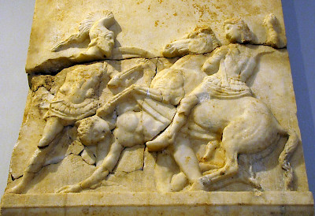

The Battle of Chaeronea (c. 338 BCE)

The Battle of Chaeronea took place in August 338 BCE in Boeotia, central Greece. It was fought between the Macedonian army, led by King Philip II, and an alliance of Greek city-states, mainly Athens and Thebes. Philip wanted to extend his control over Greece, but Athens and Thebes joined forces to stop the expansion of Macedonian power. The Macedonian victory marked a major turning point, as it ended most organized military resistance to Philip and established Macedonia as the dominant power in Greece.
Philip commanded an army of approximately 30,000 infantry soldiers and 2,000 cavalrymen. The allied Greek forces had around 35,000 soldiers. Philip placed his young son, Alexander, who was only 18 years old, in charge of an important part of the Macedonian army. Alexander fought on the Macedonian left, facing the Thebans and their famous Sacred Band, an elite group of soldiers known for their discipline and courage.
Historians have different explanations for how the battle was won. One interpretation suggests that Philip deliberately pulled his troops back to draw the Athenian soldiers out of position. This created an opening in the Greek defensive line, which Alexander and the Macedonian cavalry used to attack. Another explanation emphasizes the strength and organization of the Macedonian army, particularly its phalanx, whose soldiers carried long spears called sarissas. These weapons gave the Macedonians an advantage in close combat.
The Greek alliance suffered a devastating defeat. The Sacred Band fought fiercely but was eventually destroyed rather than surrendering. Archaeologists later discovered a burial site near Chaeronea containing 254 skeletons believed to belong to members of this elite Theban unit. Their burial is a reminder of the heavy losses suffered during the battle.
The victory at Chaeronea greatly increased Philip II's influence over the Greek city-states. Although some cities retained their local governments, they could no longer effectively challenge Macedonian military power. The battle also gave Alexander valuable military experience before he became king and began his campaigns of conquest. Ultimately, Chaeronea marked the end of an era in which the Greek city-states had largely competed independently for power and the beginning of Macedonian dominance over Greece.